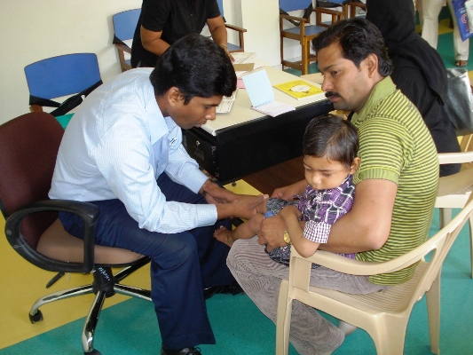
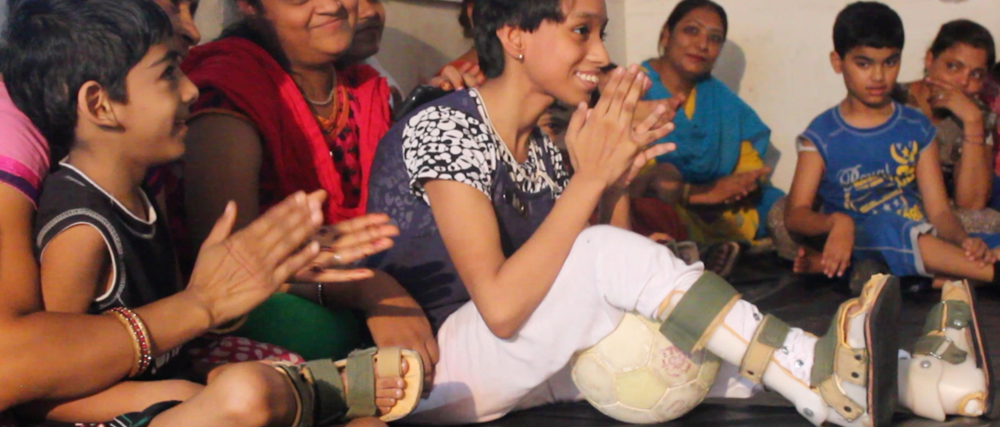

About Us
The Lotus Life Foundation is run by a dedicated team that works behind the scenes to make sure our programs aid our beneficiaries in every possible way.
Our Mission Statement
The Lotus Life Foundation aims to empower
the lives of children with disabilities in rural India through medical intervention and education.
Ultimately, our goal is to integrate these children into society and
take a strong step towards eradicating the stigma associated with disability in rural India.
=======
Our Mission Statement
The Lotus Life Foundation aims to empower the lives of children with disabilities inrural India through medical intervention and education.
Ultimately, our goal is to integrate these children into societyand take a strong step towards eradicating the stigmaassociated with disability in rural India.
>>>>>>> Stashed changesMeet the team
=======
Meet the team
>>>>>>> Stashed changes

Param Shah
(Founder and President)
Param Shah (Founder and President)
Param Shah is our Founder and President. He started LLF if April 2013 after his passion for community service and photography took him to the Himalayas in India (some of the photos on this site are by him!). He currently studies Computer Science and Computer Integrated Surgery at Johns Hopkins and his interests lie in researching and developing new biotechnology to treat the same neurological diseases and disorders that Lotus Life treats. He started another cool company called Fusiform to figure out how to develop some of the devices we treat our children with in a fraction of the time.
xAnand Ahuja
(Director of Strategy)
Anand Ahuja (Director of Strategy)
Anand Ahuja is our Director of Strategy. Anand is from San Antonio Texas and attended Keystone High School for the majority of his preparatory education. He is currently a freshman Hodson Trust Scholar at the Johns Hopkins University double majoring in Applied Math and Statistics and Philosophy. He has previously been heavily involved with research investigating novel treatments of HIV and biology of allergic responses; these projects also encouraged him develop an analytical mind for computer programming and statistical analysis. Anand seeks to make a lasting impact on disabled people in India who are normally shunned away by society.
xAditi Ramesh (Director of Operations)
Aditi is currently attending the University of Southern California in Los Angeles, California majoring in Economics/Mathematics. She has had the privilege of volunteering for CORD Sidhbari, one of our partner organizations, last summer, and personally witnessing the state of physical disability in India. This experience has fueled her passion for the Lotus Life Foundation and opened her eyes to the stigma surrounding disability in rural areas of India. Aditi also works with non-profits in the Los Angeles area through a pro-bono student consulting organization, Los Angeles Community Impact. As Director of Operations for LLF, she hopes to help our organization grow to reach hundreds of more patients and improve the quality of life for those affected by diseases such as cerebral palsy and muscular dystrophy.
x
Jonathan Fu
(Director of Information)
Jonathan Fu (Director of Information)
Jonathan Fu, our Director of Information, is from Irvine, California. He is a biophysics major at Johns Hopkins University aiming to one day become an orthopedic surgeon, and is most interested in studying the pathophysiology of diseases affecting the muscular and skeletal systems. His fascination with the physiology of the human body came primarily from his work during his internship under Stanford University’s Department of Cardiothoracic Surgery, where he studied the biological processes behind the development of disease. He had the rare opportunity to implement his own public health campaign concerning disease epidemiology in the rural village of El Transito, Nicaragua.
xDeena Younan (Director of Media Design)
Deena is currently attending the University of California at Berkeley, California and majoring in Political Science and Legal Studies. She works with another non-profit organization, The Berkeley Forum, in the Bay area and enjoys working as a Peer Advisor for the the College of Letters and Science at Berkeley. She has been practicing as a freelance graphic designer for many years, which has led her to work with some great clubs, businesses, and organizations. As Director of Media Design for LLF, she hopes to help our organization establish a presence in both the United States and India in order to reach more patients and improve their quality of life.
x
Andrew Colombo
(Director of R+D)
Andrew Colombo (Director of R+D)
Andrew Colombo, originally from Doylestown, Pennsylvania, is our Director of Research and Development. Majoring in Mechanical Engineering with a concentration in Aerospace Engineering at Johns Hopkins University, Andrew is a sophomore who is bringing technological innovation to rural India to support our cause. With his growing skill set in mechanical engineering and computer science, he applies his knowledge to improve the lives of disabled children in rural India. Aside from his work with the Lotus Life Foundation, he is involved as an undergraduate research assistant doing hardware and electronics design as well as the mechanical integration of several projects. Also, he works as a design engineer for Fusiform, a modular orthotics company.
xMeet OurBoard of Advisors
Dr. Alay Banker
(Medical Initiatives Advisor)
Dr. Alay Banker is our Medical Initiatives Advisor. Dr. Banker is a world renowned vitreoretinal surgeon in demand internationally for his work. He is the director of his own Retina Clinic and Laser Center in Ahmedabad, India. Receiving his medical degree at Gujarat University, Dr. Banker proceeded to receive fellowships at the Medical Research Foundation in Madras, India and the Shiley Eye Center at the University of California, San Diego in surgical ophthalmology. He is credited for developing treatments on the frontier of ophthalmology, including developing a groundbreaking method for treating childhood blindness, restoring sight to the hundreds of impoverished children he treats for no cost at his clinic. Dr. Banker holds the honorary position as the Head of the Department of Vitreoretinal Diseases at the Polio Foundation Hospital in Ahmedabad. The main objective of the Polio Foundation is to provide free treatment, care and assistive devices to help physically handicapped children. His accolades include receiving the 2014 Best Poster Award at the American Academy of Ophthalmology, the Senior Honor Award from the American Society of Retinal Specialists, and the Senior Achievement Award from the American Academy of Ophthalmology. For his service to his community, he received the Dr. Piyush Patel Award for Service to Society and Mankind from the Ahmedabad Medical Association.

Peter Raymond
(Development Strategy Advisor)
Peter E. Raymond is our Development Strategy Advisor. Peter is an innovator, serial entrepreneur, investor, and creative strategist. By merging art, science, and business acumen, he develops industry changing companies, models and emerging tech. He is looking to connect with other doers and organizations who can accelerate disruptive yet socially conscious solutions for the world's toughest challenges without fear. Peter has built Human Condition to execute at scale across education, environment, construction, renewable energy, healthcare, technology, sports, media, agriculture, transportation, bigdata, and finance sectors. His work has been featured multiple times by New York Times, Boston Globe, Wired, Popular Science, PBS, Apple, New Scientist, Mashable, and he has appeared on ABC and CBS Nightly News. He and his teams uncover unique insights and develop innovation strategies that result in socially conscious solutions, brands, products, revenue models, education, technology, and simulations for Fortune 500's, startups, nonprofits, governments, and their customers, such as: The Bill and Melinda Gates Foundation, The City of New York, Nissan, Hearst Publishing, Viacom, ESPN, IKEA, Tom Ford, AstraZeneca, BristolMyers Squibb, Biogen Idec, Boehringer Ingelheim, Nokia, NAACP, Africa America Institute, Drum Major Institute, and The Baseball Hall of Fame. As a Senior Fellow at Thomas Jefferson School of Population Health his focus was empathy and behavioral change, as well as developing the next generation of simulation and safety wearable technology to enable medical adoption.
 >>>>>>> Stashed changes
>>>>>>> Stashed changes
Rebecca Arnold
(Media Strategy Advisor)
Rebecca Arnold is our Media Strategy Advisor. Rebecca Arnold is an international nature and nonprofit photographer based in New York City. She has explored almost 40 countries; today she focuses on developing countries where she shoots pro bono annually with nonprofits like UNICEF and IRC. Rebecca is also a Volunteer Ambassador for Opus Award-winning St. Luke Foundation in Haiti, and she's partnered with Nobel Peace Prize-winning Mohammad Yunus' Grameen Foundation in Africa. Rebecca also founded her own post-production and photo editorial company in 2000. She works with top celebrities and brand names. Over a billion people worldwide have seen her creative work. Lastly, Rebecca is a personal development coach and speaker. She has been to four continents coaching and mentoring clients from over 35 countries. She’s a select coach for United Nations staff globally in their Leadership Development Program. Rebecca has also been a mentor at international youth leadership summits, she has collaborated with the Dalai Lama Fellows, and she's a partner at the startup, Human Condition Labs.
Dr. Shreesh Mysore
(Research Initiatives Advisor)
Dr. Shreesh Mysore is our Research Initiatives Advisor. Dr. Mysore is an Assistant Professor of Psychological and Brain Sciences at the Johns Hopkins University. He holds a PhD in Control and Dynamic Systems from the California Institute of Technology and received a postdoctoral fellowship at Stanford University in Neurobiology. His current interests include understanding the circuitry of psychiatric disorders such as ADHD, autism, and schizophrenia, as well as developing therapeutic strategies for these disorders. He is investigating the fundamental design of neural circuits, yielding deep insights into basic brain function. In addition, Dr. Mysore is interested in thinking about the brain in terms of a biological computer, and drawing insights from the brain to build faster computer machinery. For his work studying the nervous system, he has received fellowships and awards from high- profile institutions such as the Society for Neuroscience, IEEE Computational Intelligence Society, the Santa Fe Institute, and the Cold Spring Harbor Lab.
Chinmaya Organization for Rural Development
To facilitate integrated and sustainable development in rural India through self empowerment processes.
Chinmaya Mission is a spiritual, social and educational organization with a global presence. The service wing of the Mission operates under the acronym CORD – Chinmaya Organisation of Rural Development. In pursuance of the vision of its founder, Swami Chinmayananda, it has been actively serving citizens of rural India for the past several years.
Polio Foundation
To lessen the burden of life on polio and cerebral palsy affected individuals and their families.
Doctors, paramedics and donors have joined hands with each other for this noble cause. Right from prevention to rehabilitation, One Window Service includes immunization, early diagnosis, counselling, corrective surgery, caliper workshop, socioeconomic rehabilitation, each step towards definite freedom and happiness.
partner popup
Our rehab team provides multimodal approach of physiotherapy to children affected with any kind of physical disability. We use latest concept of physiotherapy which include NDT, SI, Strength training, Faradic stimulation, TRP, MRP and yoga. Our team include well trained developmental therapist & Occupational therapiest, speech therapist, special educator etc. We manage these children for complete rehabilitation that start from physiotherapy, bracing, walking aid, surgical intervention, special education and promote them for professional courses & training for their livelihood. We educate parents and CP person for their legal rights. To continue the advance research in Cerebral Palsy, we provide intellectual space. This centre is being recognized as a centre of excellence in providing comprehensive care in the field of pediatric orthopedics, deformity correction & cerebral palsy.
xFAQs
How does Lotus Life work internationally?
We select partners established in India that do incredible work, and we implement our programs through them. For example, one of our partners is a nonprofit hospital located in Ahmedabad, Gujarat who mostly reaches an urban-based population. With our help we are helping them establish satellite centers which will provide healthcare access to people with disabilities in more rural areas of Gujarat.
Where does Lotus Life work?
Our work is located in rural regions in India. Currently we have projects in the states and surrounding areas of Gujarat, Himachal Pradesh, and Uttar Pradesh.
What medical treatment do you provide?
We mostly work with children that have disabilities from diseases such as Cerebral Palsy, Muscular Dystrophy and other such diseases. For this we do treatments ranging from orthotic intervention to surgery. Physical therapy is a large part of our treatment regimen, and we implement a home-based therapy program through all of our partners in which we train the parents of a child to perform daily physical therapy at home.
How do you select a partner?
Our partners are thoroughly vetted by our team to make sure we create the most effective relationships. We make sure our partners are ambitious, looking to improve and expand their programs, and most of all have genuine passion for the cause. We then perform a pilot program and from then on we decide if a partner is the right fit for us.
How do I help out?
We believe that everybody has something unique to offer Lotus Life. Head on over to “Get Involved” and leave us a message with ways in which you could utilize your experience to help our cause. If you are a college student, you can apply to start a chapter at your school. You can always donate as well to provide support for our programs!
Are my donations US tax-deductible?
Yes! Lotus Life Foundation is a 501(c)(3) organization, so we are happy to tell you that your donation is US tax-deductible. Our EIN number is 46-3490001.